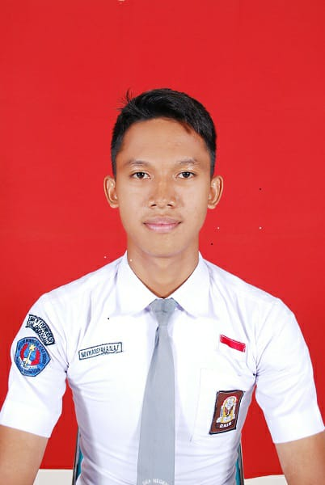

Home
|
Download CV
|
Contact
|
About me
SELAMAT DATANG
Di Halaman Website kami

NOVRIANSYAH AFQI NUR AKMAL FAUZI
(Leadership)
Overview
Hi, saya adalah calon leadership masa depan.
Skill
Pengalaman
Leadership
Berkomunikasi dengan Baik
Mampu berpikir kritis
Peka terhadap situasi sosial
Ikut serta dalam webinar Kewirausahaan yang diselenggarakan UDINUS
Ikut serta dalam Tes Taruna Akademi Militer
Purna paskibraka indonesia
Pernah mendapat juara 1 lomba baris berbaris